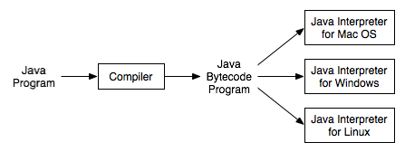

Section 1.3
The Java Virtual Machine
Machine language consists of very simple instructions that can be executed directly by the CPU of a computer. Almost all programs, though, are written in high-level programming languages such as Java, Pascal, or C++. A program written in a high-level language cannot be run directly on any computer. First, it has to be translated into machine language. This translation can be done by a program called a compiler. A compiler takes a high-level-language program and translates it into an executable machine-language program. Once the translation is done, the machine-language program can be run any number of times, but of course it can only be run on one type of computer (since each type of computer has its own individual machine language). If the program is to run on another type of computer it has to be re-translated, using a different compiler, into the appropriate machine language.
There is an alternative to compiling a high-level language program. Instead of using a compiler, which translates the program all at once, you can use an interpreter, which translates it instruction-by-instruction, as necessary. An interpreter is a program that acts much like a CPU, with a kind of fetch-and-execute cycle. In order to execute a program, the interpreter runs in a loop in which it repeatedly reads one instruction from the program, decides what is necessary to carry out that instruction, and then performs the appropriate machine-language commands to do so.
One use of interpreters is to execute high-level language programs. For example, the programming language Lisp is usually executed by an interpreter rather than a compiler. However, interpreters have another purpose: they can let you use a machine-language program meant for one type of computer on a completely different type of computer. For example, there is a program called "Virtual PC" that runs on Macintosh computers. Virtual PC is an interpreter that executes machine-language programs written for IBM-PC-clone computers. If you run Virtual PC on your Macintosh, you can run any PC program, including programs written for Windows. (Unfortunately, a PC program will run much more slowly than it would on an actual IBM clone. The problem is that Virtual PC executes several Macintosh machine-language instructions for each PC machine-language instruction in the program it is interpreting. Compiled programs are inherently faster than interpreted programs.)
The designers of Java chose to use a combination of compilation and interpretation. Programs written in Java are compiled into machine language, but it is a machine language for a computer that doesn't really exist. This so-called "virtual" computer is known as the Java virtual machine. The machine language for the Java virtual machine is called Java bytecode. There is no reason why Java bytecode could not be used as the machine language of a real computer, rather than a virtual computer.
However, one of the main selling points of Java is that it can actually be used on any computer. All that the computer needs is an interpreter for Java bytecode. Such an interpreter simulates the Java virtual machine in the same way that Virtual PC simulates a PC computer.
Of course, a different Jave bytecode interpreter is needed for each type of computer, but once a computer has a Java bytecode interpreter, it can run any Java bytecode program. And the same Java bytecode program can be run on any computer that has such an interpreter. This is one of the essential features of Java: the same compiled program can be run on many different types of computers.

Why, you might wonder, use the intermediate Java bytecode at all? Why not just distribute the original Java program and let each person compile it into the machine language of whatever computer they want to run it on? There are many reasons. First of all, a compiler has to understand Java, a complex high-level language. The compiler is itself a complex program. A Java bytecode interpreter, on the other hand, is a fairly small, simple program. This makes it easy to write a bytecode interpreter for a new type of computer; once that is done, that computer can run any compiled Java program. It would be much harder to write a Java compiler for the same computer.
Furthermore, many Java programs are meant to be downloaded over a network. This leads to obvious security concerns: you don't want to download and run a program that will damage your computer or your files. The bytecode interpreter acts as a buffer between you and the program you download. You are really running the interpreter, which runs the downloaded program indirectly. The interpreter can protect you from potentially dangerous actions on the part of that program.
I should note that there is no necessary connection between Java and Java bytecode. A program written in Java could certainly be compiled into the machine language of a real computer. And programs written in other languages could be compiled into Java bytecode. However, it is the combination of Java and Java bytecode that is platform-independent, secure, and network-compatible while allowing you to program in a modern high-level object-oriented language.
I should also note that the really hard part of platform-independence is providing a "Graphical User Interface" -- with windows, buttons, etc. -- that will work on all the platforms that support Java. You'll see more about this problem in Section 1.6.